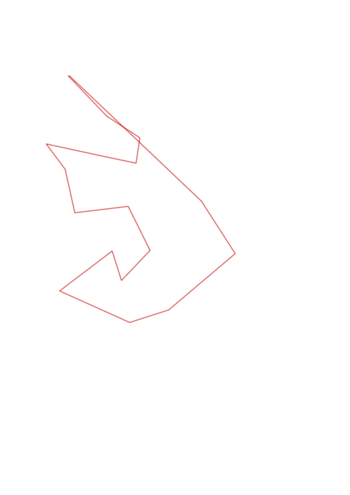
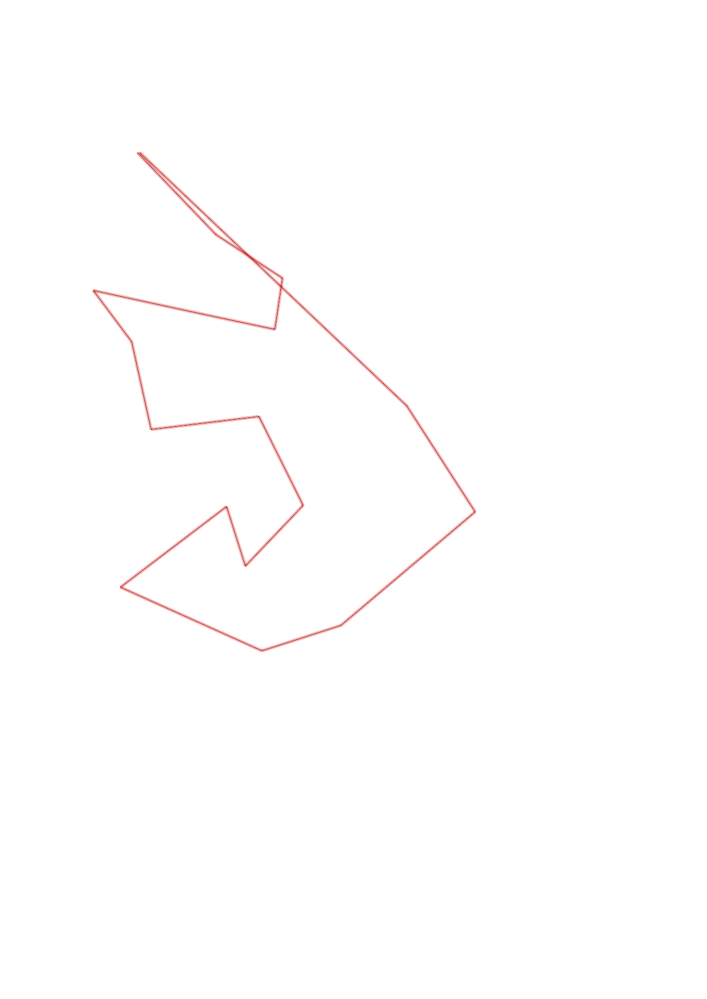

| Control |
Points |
Time Punched |
Distance |
Your Time |
Pace |
Place |
Fastest Time |
Median Time |
% Behind Fastest |
| 42 |
40 |
|
0.48 |
0:02:17 |
04:45 |
4 / 7 |
0:02:11 |
0:02:17 |
4% |
| 95 |
90 |
|
0.34 |
0:02:25 |
07:06 |
1 / 6 |
0:02:25 |
0:04:50 |
0% |
| 43 |
40 |
|
0.22 |
0:01:39 |
07:30 |
3 / 6 |
0:01:27 |
0:01:53 |
13% |
| 36 |
30 |
|
0.31 |
0:01:58 |
06:20 |
1 / 2 |
0:01:58 |
0:04:11 |
0% |
| 51 |
50 |
|
0.47 |
0:05:04 |
10:46 |
1 / 1 |
0:05:04 |
0:05:04 |
0% |
| 41 |
40 |
|
0.27 |
0:02:52 |
10:37 |
1 / 3 |
0:02:52 |
0:04:51 |
0% |
| 56 |
50 |
|
0.38 |
0:02:59 |
07:51 |
1 / 2 |
0:02:59 |
0:04:57 |
0% |
| 75 |
70 |
|
0.46 |
0:04:37 |
10:02 |
1 / 2 |
0:04:37 |
0:04:38 |
0% |
| 103 |
100 |
|
0.42 |
0:03:39 |
08:41 |
1 / 3 |
0:03:39 |
0:04:43 |
0% |
| 92 |
90 |
|
0.36 |
0:03:52 |
10:44 |
1 / 2 |
0:03:52 |
0:05:40 |
0% |
| 31 |
30 |
|
0.26 |
0:01:40 |
06:24 |
2 / 3 |
0:01:37 |
0:01:40 |
3% |
| 76 |
70 |
|
0.57 |
0:03:41 |
06:27 |
1 / 1 |
0:03:41 |
0:03:41 |
0% |
| 94 |
90 |
|
0.66 |
0:05:07 |
07:45 |
1 / 1 |
0:05:07 |
0:05:07 |
0% |
| 61 |
60 |
|
0.35 |
0:03:18 |
09:25 |
2 / 2 |
0:03:15 |
0:03:16 |
1% |
| 85 |
80 |
|
0.75 |
0:06:42 |
08:56 |
1 / 1 |
0:06:42 |
0:06:42 |
0% |
| 104 |
100 |
|
0.54 |
0:04:29 |
08:18 |
2 / 3 |
0:04:02 |
0:04:29 |
11% |
| Finish |
0 |
|
1.56 |
0:10:29 |
06:43 |
1 / 2 |
0:10:29 |
0:11:35 |
0% |
Total Distance Covered: 8.4km
Points Scored: 1030
Late Penalty: -140
Final Score: 890
Total Time: 1hours 6minutes 48seconds
Efficiency: 105.95 points/km
 
